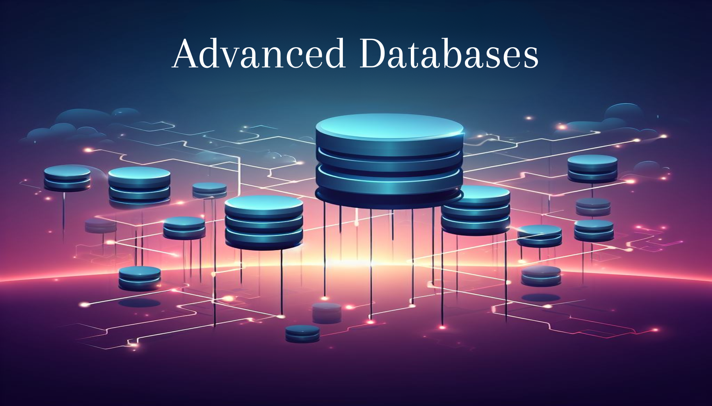

Database Systems Architecture
Mahmoud Sakr.
See notes in html See notes in pdf Project: Query Optimization Project: PostgreSQL Type Extension
Management of Data Science and Business Workflows
Dimitrios Sacharidis.
See notes in html See notes in pdf Assignments